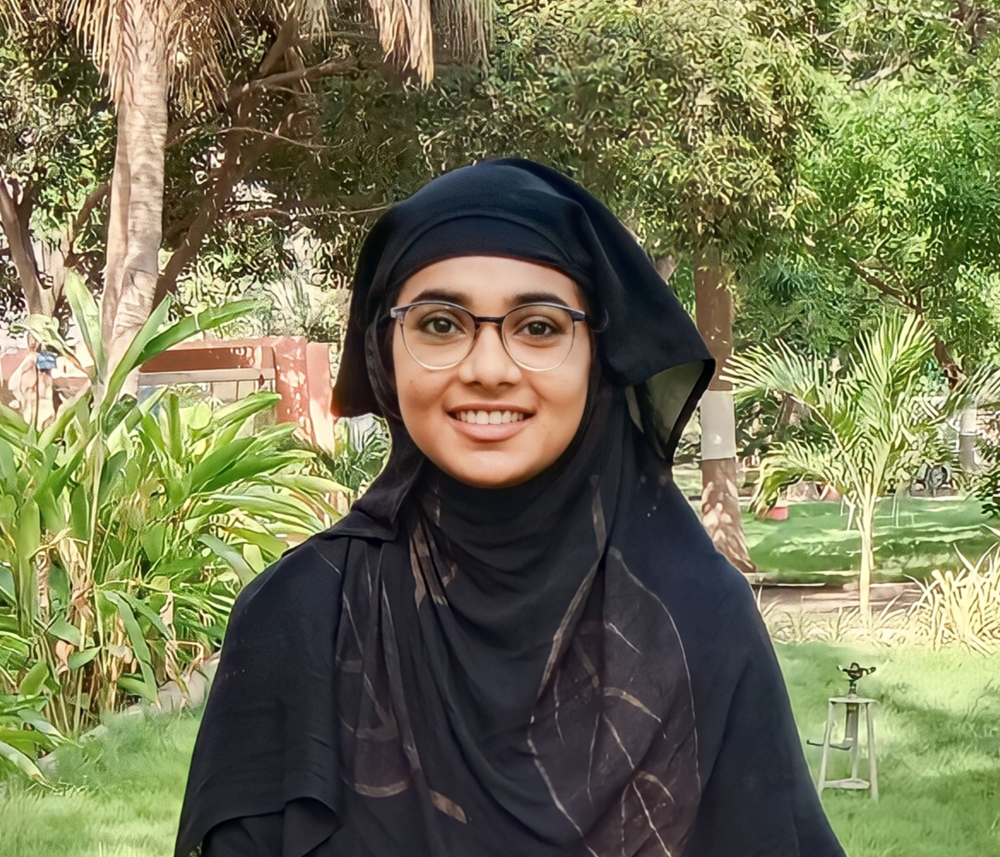

About Me

Name: Shaik Benazeer
College: SRKR Engineering College
Current position: Developer Intern
Technical Skills
- Programming Languages: Python, Java, C, C++
- Web Technologies: HTML, CSS, JavaScript
- Frameworks: React, Node.js, Spring
- Skills: Communication, Leadership
Experience
Internship at Hexart, Hyderabad (3 months)
During my internship at Hexart, I focused on data science. My main project involved developing a site related to respiratory diseases. This included:
- Analyzing data to identify patterns and insights related to respiratory diseases.
- Developing a website to present the findings and provide valuable resources.
- Utilizing programming languages and tools relevant to data science for project implementation.
Current Position: Developer Intern at Zemoso Technologies Pvt Ltd
As a Developer Intern at Zemoso, I am currently involved in a range of tasks and projects, including:
- Developing and testing software solutions in various programming languages and frameworks.
- Working on both front-end and back-end development tasks.
- Engaging in code reviews and contributing to the continuous improvement of development processes.
My role emphasizes the following key principles:
- Commitment
- Collaboration
- Communication
- Learning
Address
Bhimavaram, West Godavari, Andhra Pradesh
Hobbies
- Painting
- Travelling
- Photography
- Cooking